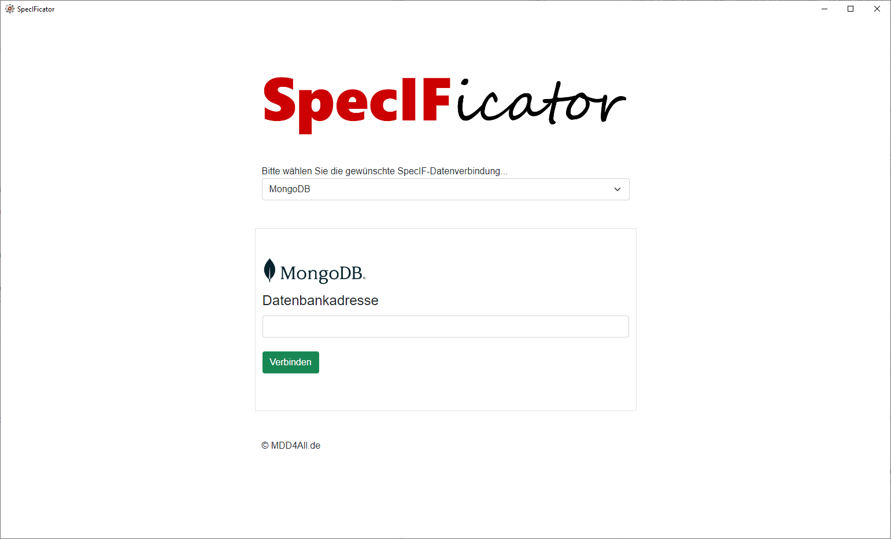

Um mit SpecIF und dem SpecIFicator zu starten können Sie die folgenden Schritte durchführen:
Informationen zum Download und zur Installation finden Sie unter Download.
Nach der Installation des Framework und des Plug-ins starten Sie die Anwendung durch Ausführung der Datei SpecIFicator.exe in ihrem Framework-Installationsordner.
Die Anwendung startet das erst mal und es erscheint die Startseite zum Verbinden einer SpecIF-Datenquelle. Sie haben nun die Möglichkeit sich mit verschiedenen Datenquellen zu verbinden. Die einfachste Möglichkeit ist zunächst mit SpecIF-Dateien zu arbeiten. Flexibler ist allerdings die Nutzung eine MongoDB-Datenbank als Datenspeicher. Im Folgenden werden beide Möglichkeiten beschrieben.
Um die dateibasierte Datenverbindung zu nutzen, legen Sie zunächst einen leeren Ordner im Dateisystem an und kopieren sich den Pfad in die Zwischenablage (z.B. C:\SpecIF\).
Nun führen Sie folgende Schritte aus, um den SpecIFicator das erste mal dateibasiert zu verbinden:
Zur Nutzung einer MongoDB installieren Sie sich zunächst eine MongoDB auf ihrem Rechner oder in einem Docker-Container und starten Sie die Datenbank. Die MongoDB-Software können Sie hier herunterladen.
Verbinden Sie sich mit der Datenbank auf folgende Weise:
Beim ersten Start sind die Datenquellen noch komplett leer. Zur Arbeit mit SpecIF sind allerdings SpecIF-Metadaten zwingend erforderlich. Solche Metadaten sind Teil der SpecIF-Freigaben, können aber auch durch eigene Metadatendefinitionen ergänzt werden.
Der SpecIFicator bitetet die Möglichkeit über die GutHub-Plattform freigegebene Metadaten zu importieren und damit die Datenquellen zu initialisieren - sofern eine Internetverbindung bereit steht. Um solche Metadaten zu importieren führen Sie bitte folgende Schritte durch:
Nun ist der SpecIFicator bereit für Dateneingaben. Klicken Sie auf 'Projekte', um neue Hierarchien anzulegen und mit der Erstellung von SpecIF-Daten zu beginnen!